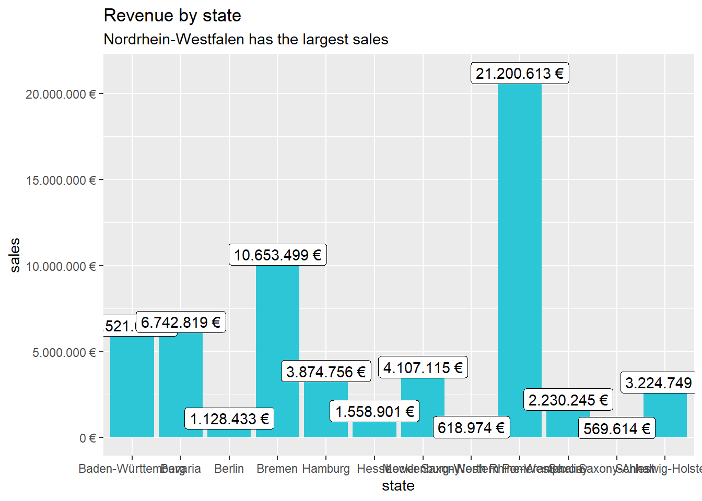
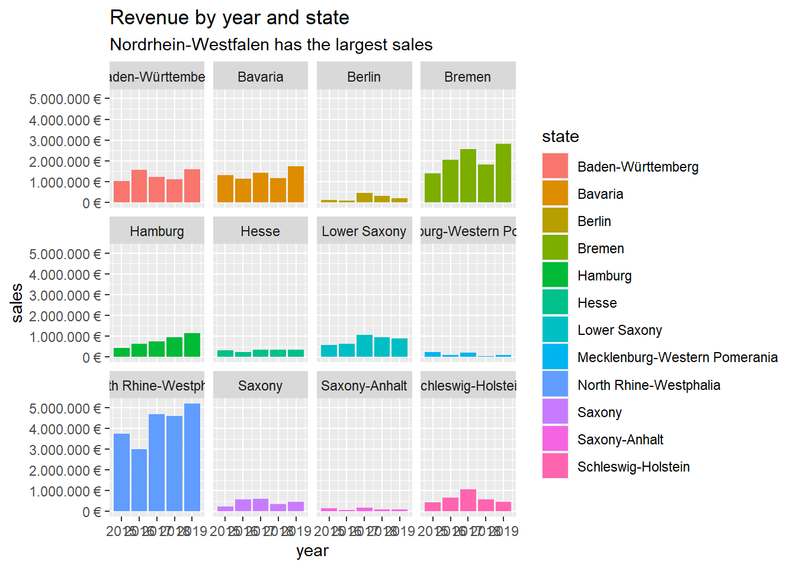

# # Data Science at TUHH ------------------------------------------------------
# # SALES ANALYSIS ----
#
# # 1.0 Load libraries ----
library(tidyverse)
library(readxl)
#
#
# # 2.0 Importing Files ----
# # A good convention is to use the file name and suffix it with tbl for the data structure tibble
bikes_tbl <- read_excel(path = "DS_101/DS_101/00_data/01_bike_sales/01_raw_data/bikes.xlsx")
orderlines_tbl <- read_excel("DS_101/DS_101/00_data/01_bike_sales/01_raw_data/orderlines.xlsx")
#
# # Not necessary for this analysis, but for the sake of completeness
bikeshops_tbl <- read_excel("DS_101/DS_101/00_data/01_bike_sales/01_raw_data/bikeshops.xlsx")
#
# # 3.0 Examining Data ----
# orderlines_tbl
# glimpse(orderlines_tbl)
# # 4.0 Joining Data ----
left_join(orderlines_tbl, bikes_tbl, by = c("product.id" = "bike.id"))## # A tibble: 15,644 x 15
## ...1 order.id order.line order.date customer.id product.id quantity
## <chr> <dbl> <dbl> <dttm> <dbl> <dbl> <dbl>
## 1 1 1 1 2015-01-07 00:00:00 2 2681 1
## 2 2 1 2 2015-01-07 00:00:00 2 2411 1
## 3 3 2 1 2015-01-10 00:00:00 10 2629 1
## 4 4 2 2 2015-01-10 00:00:00 10 2137 1
## 5 5 3 1 2015-01-10 00:00:00 6 2367 1
## 6 6 3 2 2015-01-10 00:00:00 6 1973 1
## 7 7 3 3 2015-01-10 00:00:00 6 2422 1
## 8 8 3 4 2015-01-10 00:00:00 6 2655 1
## 9 9 3 5 2015-01-10 00:00:00 6 2247 1
## 10 10 4 1 2015-01-11 00:00:00 22 2408 1
## # ... with 15,634 more rows, and 8 more variables: model <chr>,
## # model.year <dbl>, frame.material <chr>, weight <dbl>, price <dbl>,
## # category <chr>, gender <chr>, url <chr>bike_orderlines_joined_tbl <- orderlines_tbl %>%
left_join(bikes_tbl, by = c("product.id" = "bike.id")) %>%
left_join(bikeshops_tbl, by = c("customer.id" = "bikeshop.id"))
# bike_orderlines_joined_tbl %>% glimpse()
# # 5.0 Wrangling Data ----
# bike_orderlines_joined_tbl$category
# bike_orderlines_joined_tbl %>%
# select(category) %>%
# filter(str_detect(category, "^Mountain")) %>%
# unique()
# bike_orderlines_wrangled_tbl <- bike_orderlines_joined_tbl %>%
# # 5.1 Separate category name
# separate(col = category,
# into = c("category.1", "category.2", "category.3"),
# sep = " - ") %>%
#
# # 5.2 Add the total price (price * quantity)
# # Add a column to a tibble that uses a formula-style calculation of other columns
# mutate(total.price = price * quantity) %>%
#
# # 5.3 Optional: Reorganize. Using select to grab or remove unnecessary columns
# # 5.3.1 by exact column name
# select(-...1, -gender) %>%
#
# # 5.3.2 by a pattern
# # You can use the select_helpers to define patterns.
# # Type ?ends_with and click on Select helpers in the documentation
# select(-ends_with(".id")) %>%
#
# # 5.3.3 Actually we need the column "order.id". Let's bind it back to the data
# bind_cols(bike_orderlines_joined_tbl %>% select(order.id)) %>%
#
# # 5.3.4 You can reorder the data by selecting the columns in your desired order.
# # You can use select_helpers like contains() or everything()
# select(order.id, contains("order"), contains("model"), contains("category"),
# price, quantity, total.price,
# everything()) %>%
#
# # 5.4 Rename columns because we actually wanted underscores instead of the dots
# # (one at the time vs. multiple at once)
# rename(bikeshop = name) %>%
# set_names(names(.) %>% str_replace_all("\\.", "_"))
# # 6.0 Business Insights ----
# # 6.1 Sales by Year ----
#
library(lubridate)
# # Step 1 - Manipulate
# sales_by_year_tbl <- bike_orderlines_wrangled_tbl %>%
#
# # Select columns
# select(order_date, total_price) %>%
#
# # Add year column
# mutate(year = year(order_date)) %>%
#
# # Grouping by year and summarizing sales
# group_by(year) %>%
# summarize(sales = sum(total_price)) %>%
#
# # Optional: Add a column that turns the numbers into a currency format
# # (makes it in the plot optically more appealing)
# # mutate(sales_text = scales::dollar(sales)) <- Works for dollar values
# mutate(sales_text = scales::dollar(sales, big.mark = ".",
# decimal.mark = ",",
# prefix = "",
# suffix = " €"))
#
# sales_by_year_tbl
# # Step 1 - Manipulate
#
# # Step 2 - Visualize
# sales_by_year_tbl %>%
#
# # Setup canvas with the columns year (x-axis) and sales (y-axis)
# ggplot(aes(x = year, y = sales)) +
#
# # Geometries
# geom_col(fill = "#2DC6D6") + # Use geom_col for a bar plot
# geom_label(aes(label = sales_text)) + # Adding labels to the bars
# geom_smooth(method = "lm", se = FALSE) + # Adding a trendline
#
# # Formatting
# # scale_y_continuous(labels = scales::dollar) + # Change the y-axis.
# # Again, we have to adjust it for euro values
# # scale_y_continuous(labels = scales::dollar_format(big.mark = ".",
# # decimal.mark = ",",
# # prefix = "",
# # suffix = " €")) +
# # labs(
# # title = "Revenue by year",
# # subtitle = "Upward Trend",
# # x = "", # Override defaults for x and y
# # y = "Revenue"
# # )
# #
# # # 6.2 Sales by Year and Category 2 ----
# #
# # # Step 1 - Manipulate
sales_by_year_cat_1_tbl <- bike_orderlines_wrangled_tbl %>%
# #
# # # Select columns and add a year
select(order_date, total_price, category_1) %>%
mutate(year = year(order_date)) %>%
# #
# # # Group by and summarize year and main catgegory
group_by(year, category_1) %>%
summarise(sales = sum(total_price)) %>%
ungroup() %>%
# #
# # # Format $ Text
mutate(sales_text = scales::dollar(sales, big.mark = ".",
decimal.mark = ",",
prefix = "",
suffix = " €"))
# #
# # sales_by_year_cat_1_tbl
# #
# # # # Step 2 - Visualize
# sales_by_year_cat_1_tbl %>%
# # #
# # # # Set up x, y, fill
# ggplot(aes(x = year, y = sales, fill = category_1)) +
# # #
# # # # Geometries
# geom_col() + # Run up to here to get a stacked bar plot
# # #
# # # # Facet
# facet_wrap(~ category_1) +
# # #
# # # # Formatting
# scale_y_continuous(labels = scales::dollar_format(big.mark = ".",
# decimal.mark = ",",
# prefix = "",
# suffix = " €")) +
# labs(
# title = "Revenue by year and main category",
# subtitle = "Each product category has an upward trend",
# fill = "Main category" # Changes the legend name
# )
# # #
# #
# # # 7.0 Writing Files ----
# # install.packages("writexl")
library("writexl")
bike_orderlines_wrangled_tbl %>%
write_xlsx("DS_101/DS_101/00_data/01_bike_sales/02_wrangled_data/bike_orderlines.xlsx")
# #
# # # 7.2 CSV ----
bike_orderlines_wrangled_tbl %>%
write_csv("DS_101/DS_101/00_data/01_bike_sales/02_wrangled_data/bike_orderlines.csv")
# #
# # # 7.3 RDS ----
bike_orderlines_wrangled_tbl %>%
write_rds("DS_101/DS_101/00_data/01_bike_sales/02_wrangled_data/bike_orderlines.rds")
# # # 7.1 Excel ----
# #
# # # 7.2 CSV ----
# #
# # # 7.3 RDS ----
# #sales plot by state
bike_orderlines_wrangled2_tbl <- bike_orderlines_wrangled_tbl %>%
separate(col = location,
into = c("city", "state"),
sep = ", ")
sales_by_location_cat_1_tbl <- bike_orderlines_wrangled2_tbl %>%
select(total_price, state) %>%
group_by(state) %>%
summarise(sales = sum(total_price)) %>%
ungroup() %>%
mutate(sales_text = scales::dollar(sales, big.mark = ".",
decimal.mark = ",",
prefix = "",
suffix = " €"))
sales_by_location_cat_1_tbl %>%
ggplot(aes(x = state, y = sales))+
geom_col(fill = "#2DC6D6") + # Use geom_col for a bar plot
geom_label(aes(label = sales_text)) + # Adding labels to the bars
scale_y_continuous(labels = scales::dollar_format(big.mark = ".",
decimal.mark = ",",
prefix = "",
suffix = " €")) +
labs(
title = "Revenue by state",
subtitle = "Nordrhein-Westfalen has the largest sales",
fill = "state" # Changes the legend name
)
#sales plot by location and year
sales_by_location_cat_1_tbl <- bike_orderlines_wrangled2_tbl %>%
select(total_price, state, order_date) %>%
mutate(year = year(order_date)) %>%
group_by(year, state) %>%
summarise(sales = sum(total_price)) %>%
ungroup() %>%
mutate(sales_text = scales::dollar(sales, big.mark = ".",
decimal.mark = ",",
prefix = "",
suffix = " €"))
sales_by_location_cat_1_tbl %>%
ggplot(aes(x = year, y = sales, fill = state)) +
# Geometrie
geom_col() + # Run up to here to get a stacked bar plot
# Facet
facet_wrap(~ state) +
scale_y_continuous(labels = scales::dollar_format(big.mark = ".",
decimal.mark = ",",
prefix = "",
suffix = " €")) +
labs(
title = "Revenue by year and state",
subtitle = "Nordrhein-Westfalen has the largest sales",
fill = "state" # Changes the legend name
) #Chapter 3 #1. Data via API
library(XML)
library(data.table)
library(stringr)
BOK_urllist <- list()
BOK_urllist[[1]] <- "http://ecos.bok.or.kr/api/KeyStatisticList/QM0K0ZGLSB6BKFKTGJEZ/xml/kr/1/101/"
BOK_raw.data <- list()
BOK_rootNode <- list()
BOK_raw.data[[1]] <- xmlTreeParse(BOK_urllist[1], useInternalNodes = TRUE,encoding = "utf-8") # 생성한 URL 대로 XML 을 요청
BOK_rootNode[[1]] <- xmlRoot(BOK_raw.data[[1]])
BOK_total <- list()
for(i in 1:length(BOK_urllist)){
BOK_item <- list()
BOK_item_temp_dt <- data.table()
BOK_items <- BOK_rootNode[[i]]
BOK_size <- xmlSize(BOK_items)
for(j in 1:BOK_size){
BOK_item_temp <- xmlSApply(BOK_items[[j]],xmlValue)
BOK_item_temp_dt <- data.table(VAR1=BOK_item_temp[1],
VAR2=BOK_item_temp[2],
VAR3=BOK_item_temp[3],
VAR4=BOK_item_temp[4],
VAR5=BOK_item_temp[5])
BOK_item[[j]]<-BOK_item_temp_dt
}
BOK_total[[i]] <- rbindlist(BOK_item)
}
RESULTS <- rbindlist(BOK_total)
as_tibble(RESULTS)write.csv(RESULTS, "openAPIData.csv",row.names = FALSE)library(tidyverse) # Main Package - Loads dplyr, purrr, etc.
library(rvest) # HTML Hacking & Web Scraping
library(xopen) # Quickly opening URLs
library(jsonlite) # converts JSON files to R objects
library(glue) # concatenate strings
library(stringi)
url_home <- "https://www.rosebikes.de/fahrr%C3%A4der"
# Read in the HTML for the entire webpage
html_home <- read_html(url_home)
# Web scrape the ids for the families
bike_family_tbl <- html_home %>%
# Get the nodes for the families ...
html_nodes(css = ".catalog-navigation__list-item > a") %>%
# ...and extract the information of the id attribute
html_attr('title') %>%
# Remove the product families Gear and Outlet and Woman
# (because the female bikes are also listed with the others)
discard(.p = ~stringr::str_detect(.x,"Kinder|Sale|Bike-Finder")) %>%
# Convert vector to tibble
enframe(name = "position", value = "family_class") %>%
# Add a hashtag so we can get nodes of the categories by id (#)
mutate(
family_id = str_glue("#{family_class}")
)
family_id_css <- bike_family_tbl %>%
pull(family_id) %>%
stringr::str_c(collapse = ", ")
# Extract the urls from the href attribute
bike_category_tbl <- html_home %>%
# Selecting two classes makes it specific enough
html_nodes(css = ".catalog-navigation__list-item > a") %>%
html_attr('href') %>%
discard(.p = ~stringr::str_detect(.x,"kinder|sale|zoovu")) %>%
# Convert vector to tibble
enframe(name = "position", value = "subdirectory") %>%
# Add the domain, because we will get only the subdirectories
mutate(
url = glue("https://www.rosebikes.de{subdirectory}")
) %>%
# Some categories are listed multiple times.
# We only need unique values
distinct(url)
get_bike_data <- function(url) {
html_bike_category <- read_html(url)
# Get the names
bike_name_tbl <- html_bike_category %>%
html_nodes(css = ".catalog-category-bikes__title-text") %>%
html_text() %>%
str_remove_all(pattern = "\n") %>%
enframe(name = "position", value = "name")
# Get the prices
bike_price_tbl <- html_bike_category %>%
html_nodes(css = ".catalog-category-bikes__price-title") %>%
html_text() %>%
str_remove_all(pattern = "\n") %>%
enframe(name = "position", value = "price") %>%
left_join(bike_name_tbl)
}
# 2.3.1b Alternative with a for loop
# Create an empty tibble, that we can populate
bike_data_tbl <- tibble()
# Loop through all urls
for (i in seq_along(bike_category_tbl$url)) {
bike_category_url <- bike_category_tbl$url[i]
bike_data_tbl <- bind_rows(bike_data_tbl, get_bike_data(bike_category_url))
# Wait between each request to reduce the load on the server
# Otherwise we could get blocked
Sys.sleep(3)
}
bike_data_tbl <- bike_data_tbl %>%
rename("model" = "name")%>%
subset(nchar(price)!=0)
bike_data_tblsaveRDS(bike_data_tbl, "rosebikes_data_tbl.rds")